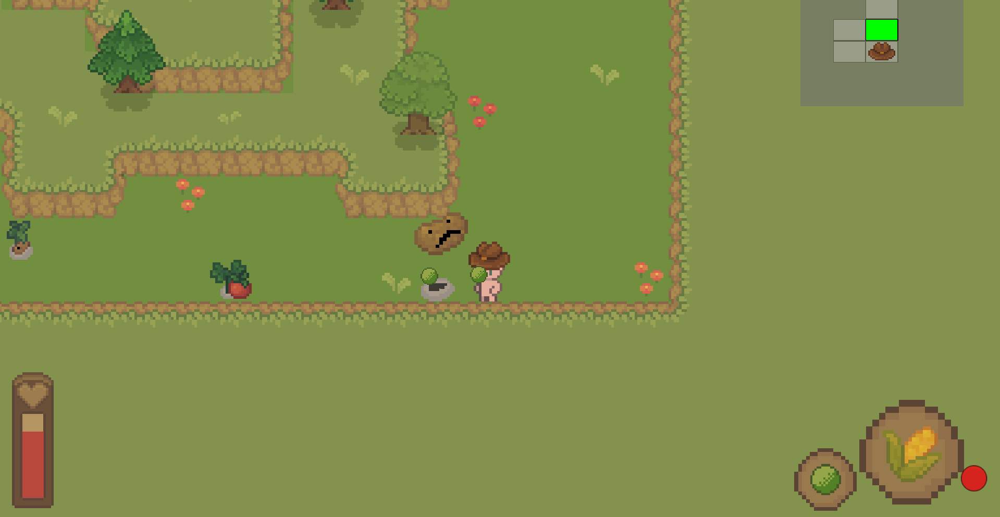
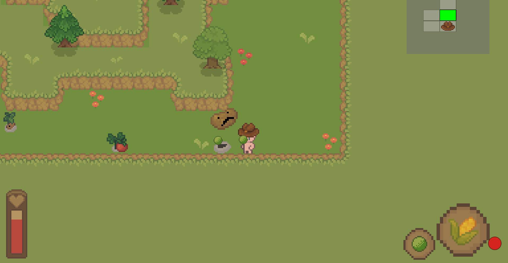
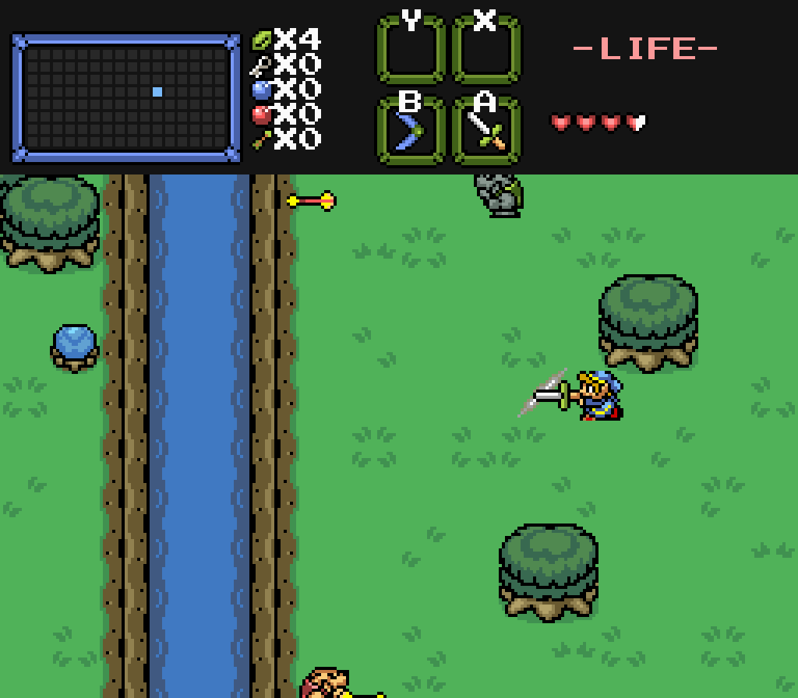
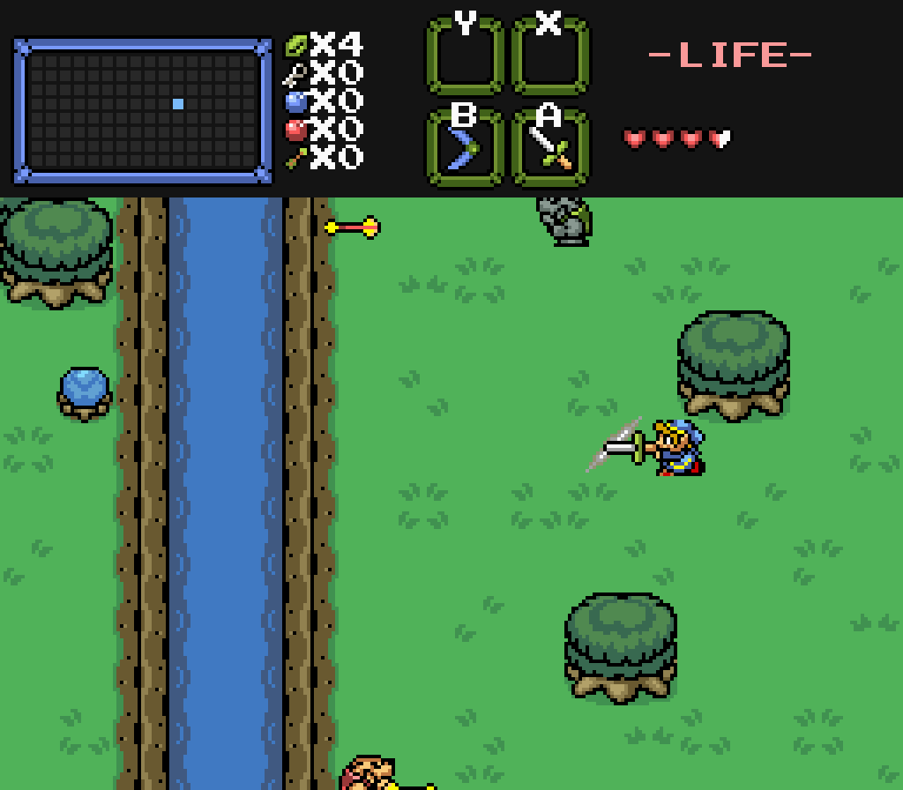

Space Invaders: The Bizarro Dimension
RIT Second Year, Fall Semester
This game is similar to the classic Space Invaders, but there are a lot of twists thrown into this game that makes it unique in its own way. This game was made using JavaScript and the external libraries PixiJS, Howler, and Google WebFonts. I designed and developed this game by myself. I learned a lot of things about Javascript as I was making this game, and now I know how I can use it to make games. I think one of the biggest challenges with this project was getting everything to work properly. Making a big game like this leaves room for a lot of bugs, and I had to playtest a lot in order to get rid of as many of them as possible. In the end, I am very proud of this silly little game that I made and I had a lot of fun making it. Click this link to play it.
Space Invaders: The Bizarro Dimension is a top-down shooter resembling the original Space Invaders, created
individually. Similarly to the original Space Invaders, you shoot aliens, but there are a
number of twists that make this game extremely different from the original.
This game was created using JavaScript with the PixiJS API. Some HTML and CSS was also used for the page
the game is on.
The art is entirely composed of 2D sprites.
Click this link to play it.
Space Invaders: The Bizarro Dimension is a top-down shooter resembling the original Space Invaders, created
individually. Similarly to the original Space Invaders, you shoot aliens, but there are a
number of twists that make this game extremely different from the original.
This game was created using JavaScript with the PixiJS API, which allows for user input and sprite graphics.
It can be played in a web browser, and some HTML and CSS was also used for the page the game is on.
Click this link to play it.
 

 
